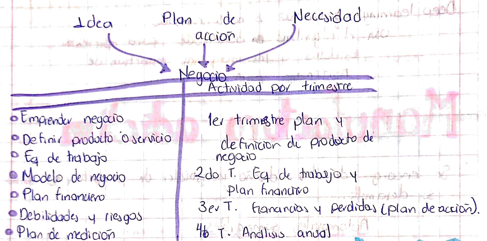
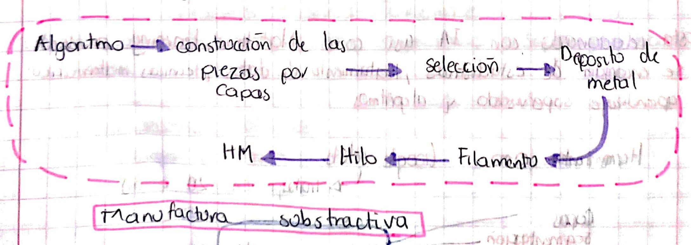
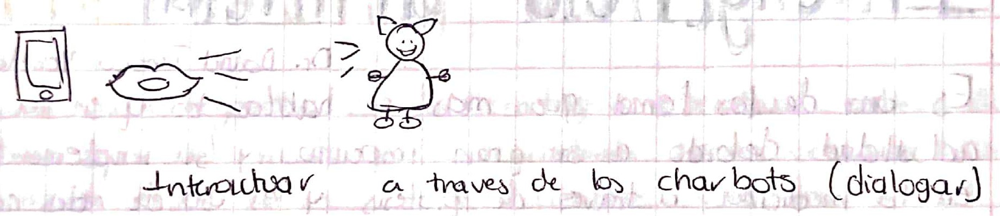

En esta conferencia conocimos a una mujer emprendedora que es del estado de Guanajuato es ingeniera en sistemas computacionales y tiene una maestría en comercio internacional, la cual ella nos hablo acerca de “emprender” y nunca dudar de nosotros mismos
Esta platica fue muy motivadora ya que la conferencia tenía muchísima actitud y converso con todos en el auditorio dio consejos sobre que se tiene que hacer para ser un buen emprendedor
tips para emprender.
1. Cree en ti mismo.
2. Piensa en lo que quieras y analiza las consecuencias.
3. Favorece el desarrollo profesional y personal de tu equipo.
4. Documentar las ideas, toma decisiones a tu equipo.
5. Rodéate de gente que crea en ti y en tu proyecto.
6. Siempre se inconforme.
7. No pierdas la perspectiva.
8. Aprende de los golpes.
9. Ten ganas de comerte al mundo

Detección y segmentación de objetos con Deep-learning
Dr. Juan Alberto Antonio
Deep Learning: es un método de Machine Learning y viene de la idea de imitar el funcionamiento de
las neuronas en los humanos. Estos trabajan conjuntamente, pero sin una tarea concreta, la experiencia
va reforzando ciertas conexiones y hace posibles conexiones y hace posible el aprendizaje.
Los métodos de Deep learning
• Trabajo con aprendizaje supervisado
• Trabaja en un aprendizaje supervisado
• Hibrido redes neuronales
Red neuronal(neurona biológica): segmentación, capas, busqueda de objeto,
regiones y clasificación. Algunas algoritmos que usan las redes neuronales pueden ser RDN, CNN, AUTOENCODER, GAN.
Representación de datos:
• Detección de rostros
• Datos
• Google leens
• Identificación del objeto
Manufactura adictiva
Dr. Carlos Honorio De la Cruz Alemán
Se encarga de los diseños industriales de productos así com su desarrollo.
Automoviles sumergibles
Pero debido a su alto costo de producción este auto sumergible se realiza en
prototipos a traves de una impresión en #D con el objetivo de que se pueda lograr el objetivo y despues realizare
a gran escala.

Agentes conversacionales en inteligencia artificial: actualidad y restos futuros
DR. Francisco Hiram Calvo Castro
En esta conferencia el doctor francisco nos hablo acerca de los agentes conversacionales en inteligencia
artificial lo que funciona en la actualidad y los retos que puedes existir en el futuro.
Es importante que se hable acerca de la inteligencia artificial que existe, ya que sabemos que día con
día va cambiando, por ejemplo:
• Interfaces chats.
• Suite soluciones.
• Expectativas infladas en los chats.
• Desifucion.
• Iluminación.

Muchas empresas estan apostando por ellos en la actulidad ya que es más facil y rapido para los
los usuarios.
Sin embargo replicas de paginas web: no entienden peticiones, no ejecuta comandos, el leguaje puede ser
tomado como ofensivo; Siri y Alexa son un claro ejempo de asistentes de voz
Connecting IoT Devices to Cloud Services
Mtro. Yair Rivera Julio
La actividad a traves de la nube son los servicios que hay en la actualidad son confiables y
seguros de tal modo que sean accesibles.
Para acceder a ellos se usa redes moviles que esten logueados a servidores.
Metaverso es una de
las empresas en la cual se apoya con servidores en la nube para guardar todos los
datos de sus usuarios de forma digital.
Requieren de dispositivos que puedan estar bajo potencia optimizando soluciones entre los usuarios y empresas.